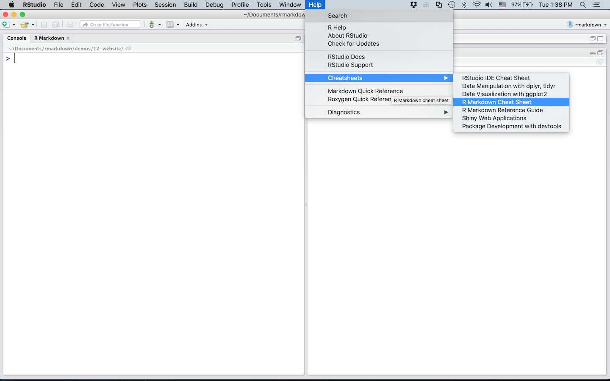

---
title: "My Analysis"
author: "John Doe"
date: "October 9, 2023"
output: html_document
---Week 1 Lab
Part 3: Markdown and Latex
What is Markdown?
Generally speaking, markdown is a set of standards for formatting text on the internet. It has the advantage of being easy-to-write as well as easy-to-read. There are many “flavors” of markdown, each with their own special rules and/or syntax, but much of the core syntax stays the same throughtout.
If you’ve been on reddit.com, you can format your posts/comments using a markdown syntax. For instance,
_Duh_is rendered as Duh**Sick**is rendered as Sick~~Mapajahit~~is rendered asMapajahit[this one](https://en.wikipedia.org/wiki/Majapahit)displays a link like this one to the listed URL
This website offers some markdown guides and a cheat sheet for general use. Keep reading for more RMarkdown-specific resources.
RMarkdown
RMarkdown is a framework that combines the formatting of Markdown with the language of R. RMarkdown documents can be output to HTML, PDF, and more, making it extermely handy for presenting, submitting work, website publishing, and tons of other stuff in the academic and professional world.
An RMarkdown document, with the file extension .rmd, consists of three main components:
- Plain text, written in markdown syntax
- R code “chunks” – pieces of R code interlaced throughout your document.
- Something called YAML
1. Markdown
Here is a link to the RMarkdown cheat sheet, provided from the team that makes RStudio:
This cheat sheet, as well as some other helpful R-related cheat sheets, can be found directly within RStudio:

2. Chunks (aka “Cells”)
In RMarkdown, we can use three backticks (`) to enclose R code that we want displayed and/or run in our document. However, we have to tell the computer what language we want to use, by labelling the first set of backticks with {r}. In practice, this looks like
```{r}
x <- data.frame(x = c(1, 2, 3), letters = c("a", "b", "c"))
x
```You can also name chunks by adding a space + <chunk-name> after {r} (e.g. {r my-r-chunk-1}).
3. YAML
YAML?
YAML (you can read about that acronym here) is a human-readable language for specifying document-level properties.
Think of it like the dialogue box that pops up when you go to print a document: after specifying a printer, you have some options to toy with. Some you may change, some are set to reasonable defaults.
YAML is like this dialogue box, but text-based. Specifying the printer is like picking an output type (HTML, PDF, etc.). You can also add a title, use a theme, etc.
YAML appears at the top of every RMarkdown document. It is enclosed on the top and bottom by three dashes: ---.
An exmaple YAML might look like:
In this class, the YAML will always be provided for assignments. You just have to add your name.
Knitting
In order to use RMarkdown, we need an engine which can “knit” together the R, Markdown, and YAML for us. Enter knitr.
knitrcan be installed withinstall.packages("knitr"). Once you haveknitrinstalled, you are ready for RMarkdown.- Note: if you already use Latex, you may have some trouble when knitr installs
tinytexon your system. You also may not. Just be prepared to troubleshoot if the two tex distributions get mad at each other.
- Note: if you already use Latex, you may have some trouble when knitr installs
A good reference for the “chunk options” block that comes with every new
.rmdfile can be found here.Andrew Dickinson prepared this nice troubleshooting sheet for when your project doesn’t knit, found here: What to do when your R Markdown file does not knit
He also prepared this nice example document, which you can find on our github page.
What is Latex?
You can think of \(\LaTeX\) similarly to Markdown: it is a system of conventions used to tell a computer how to format a document. While Makrdown is mostly about formatting text (like for a web page), LaTeX is more about type-setting equations, symbols, formulae, and the publications that contain such items. It helps write your STEM textbooks and is used by numerous scholars and practitioners for creating pretty, techincal documents.
Tip
If you go try to learn plain Latex, you might feel overwhelmed with syntax. Instead of YAML, direct Latex requires a completely different style of header. Here is a quick header to help you get started:
\documentclass[12pt,letterpaper]{article}
\usepackage{mathtools}
\usepackage{amssymb}
\usepackage{amsthm}
\usepackage{mathrsfs}
\usepackage[left=1in,top=1in,right=1in,bottom=1in]{geometry}
\usepackage{color}
\renewcommand{\epsilon}{\varepsilon}
\title{Tes Template}
\author{Connor W.}
\date{01/10/24}
\begin{document}
\maketitle
<your content goes here>
\end{docment}Overleaf is the ubiquitous (free) latex-editor, and it can be accessed directly from the web. It provides plenty of getting start guides and other resources, which are OK (IMHO).
RMarkdown (as well as many other markdown flavors) permits Latex type-setting That said, it is limited in certain ways when compared to plain Latex. Here are a few important things to note when formatting Latex equations in RMarkdown:
- In-line equations are formatted by wrapping dollar signs (
$) arround the relevant text.- Ex:
$y_{i}$is rendered as \(y_i\)
- Ex:
- A command in latex is identified by a backslash (
\)1- Ex:
$\alpha$= \(\alpha\),$\sum$= \(\sum\),$\sim$= \(\sim\)
- Ex:
- Subscripts are achieved using an underscore (
_); superscripts using a caret (^).$y_{ijk}$= \(y_{ijk}\), but$y_ijk$= \(y_ijk\)- Unless you use
{}, subscripts only see one character ahead.
- Unless you use
$x_{i_1}^2$= \(x_{i_1}^2\)
- Whitespace in an equation can be achieved via
\,,\, or\quad:$xyz$= \(xyz\)$xy\, z$= \(xy\, z\)$xy\ z$= \(xy\ z\)$xy\, z$= \(xy\quad z\)
- “Display Style” equations are prettier, bigger, centered, and get their own line. These equations are acheived by wrapping the relevant text in two dollar signs (
$$)- Ex:
$$y_i \sim \alpha + \beta x_i + \varepsilon$$yields \[y_i \sim \alpha + \beta x_i + \varepsilon\]
- Ex:
Remark on Quarto
Quarto is the “succesor” to RMarkdown, from the team that makes RStudio (Posit).
Quarto is a little more difficult to get up and running, but it is much more flexible and powerful than RMarkdown
We will be using RMarkdown in this class. However, Quarto behaves similarly, so you are of course welcome to work with it instead.
If you are software-savvy, you can try getting Quarto up and running on your computer. I can try to help, but I won’t promise anything. I can be much more helpful with troubleshooting RMarkdown.
Unless you work with other languages such as HTML, Python, and/or Latex, you probably won’t appreciate the advantages of Quarto as compared to RMarkdown.
Footnotes
This is called escaping↩︎